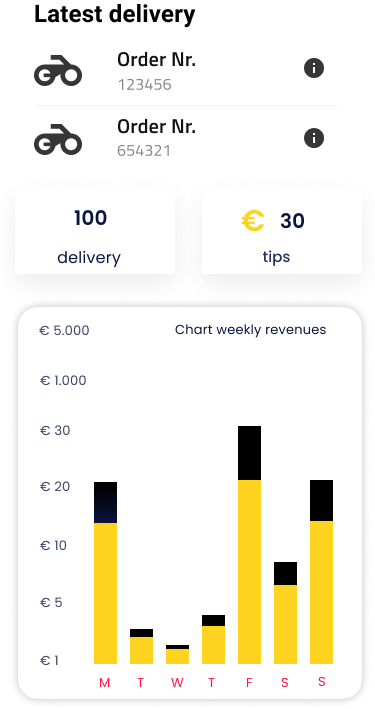

<ion-content>
  <div class="header">
    <ion-icon  [routerLink]="['../corrida-aceita']" class="back" name="chevron-back-outline"></ion-icon>
    
    <ion-menu-button class="menu"></ion-menu-button>
  </div>
  <div>
    
  </div>
</ion-content>
